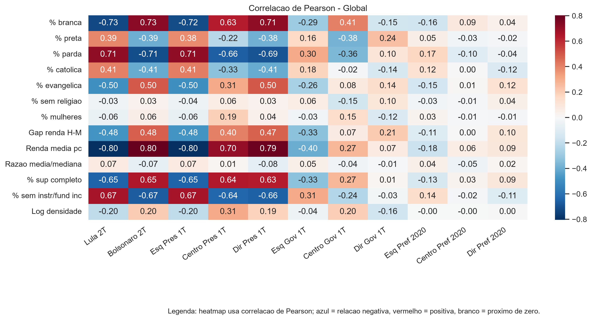
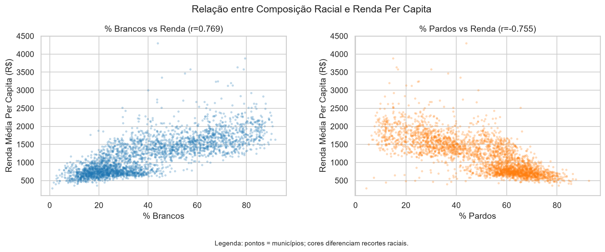
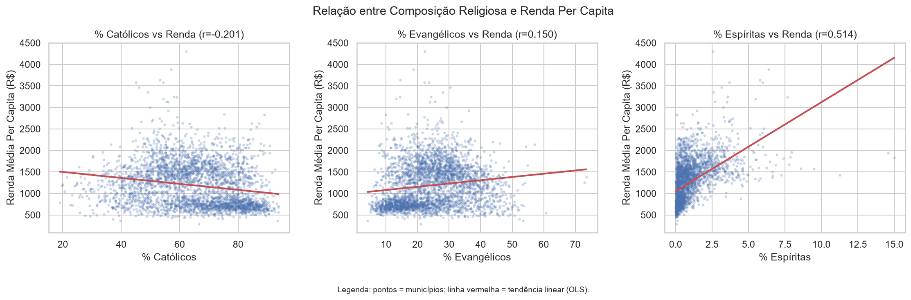
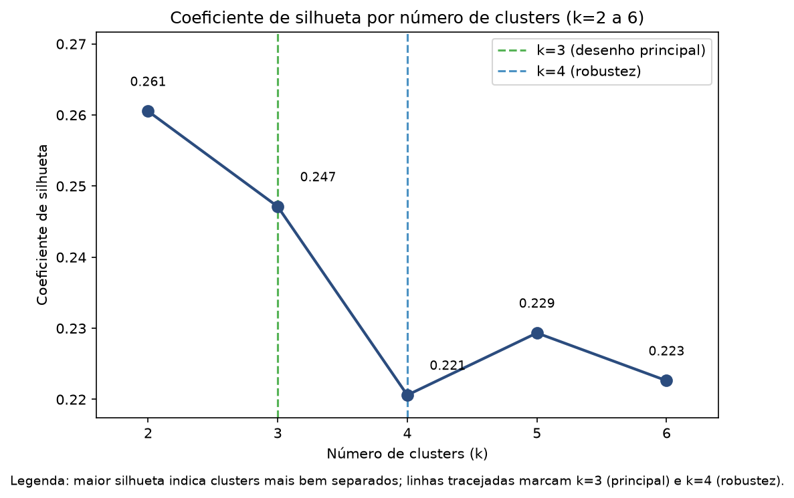
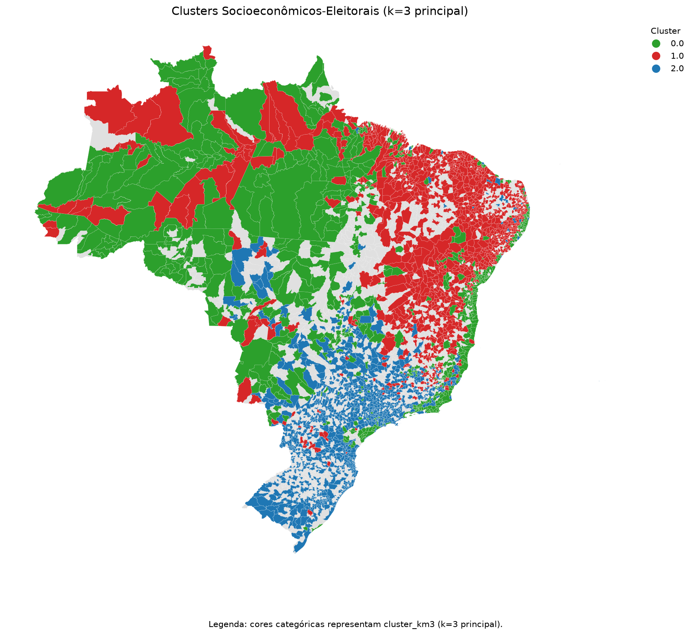
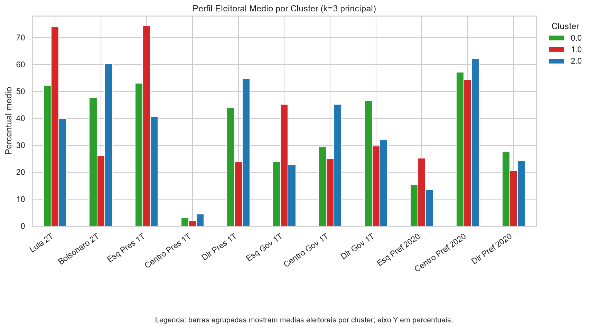
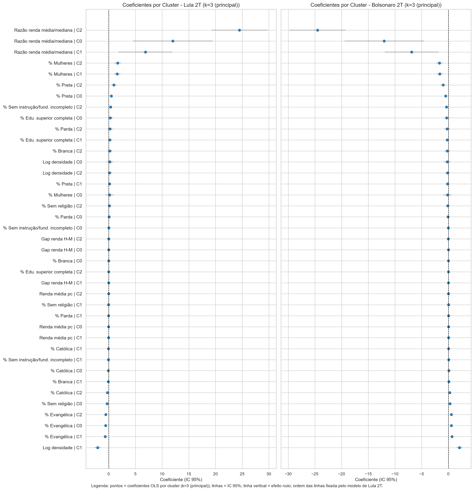
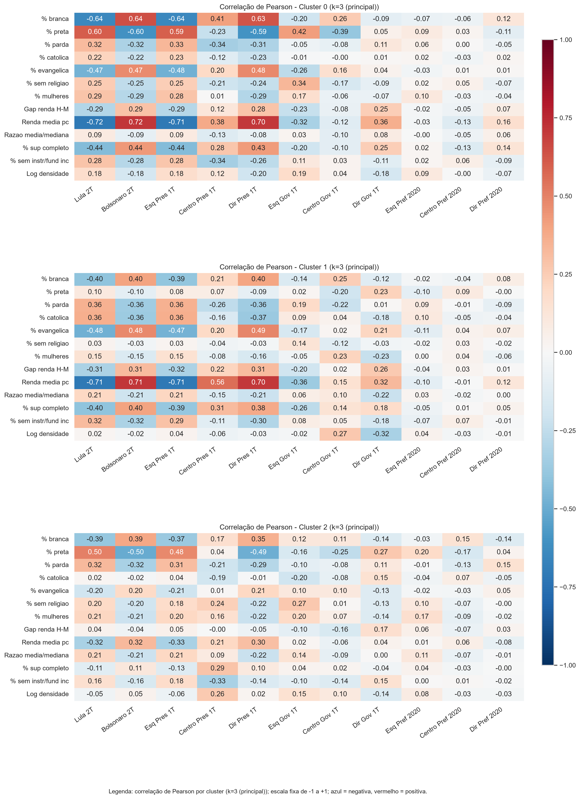
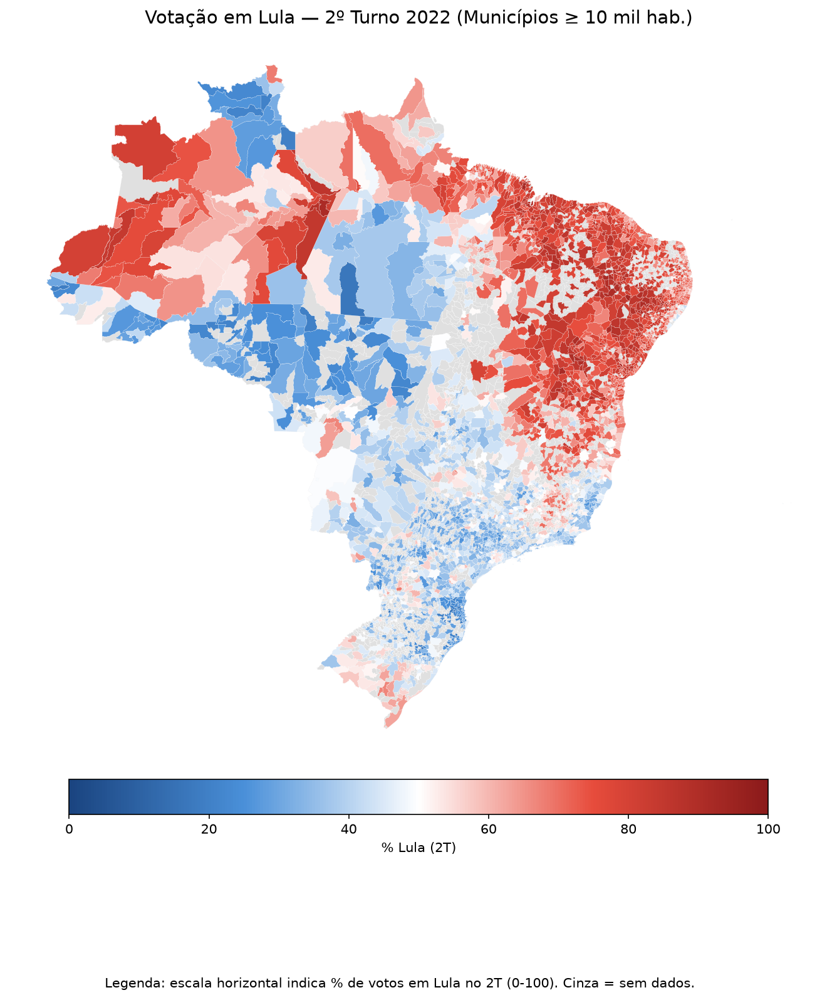
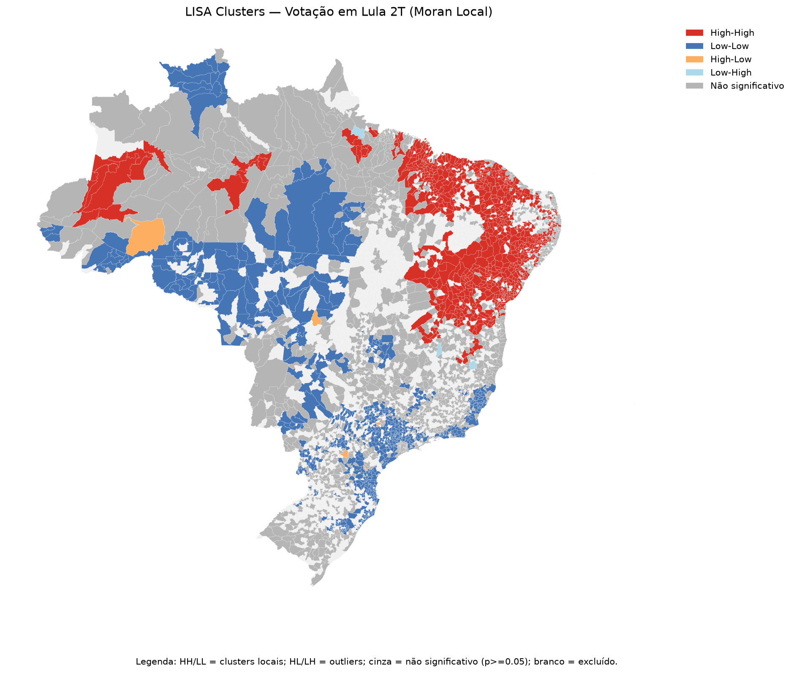

Uma análise de 3.076 municípios brasileiros, cruzando o Censo Demográfico 2022 (IBGE) com os resultados eleitorais do TSE (2020–2022), para entender como fatores sociais se associam ao voto no Executivo e como essa associação muda conforme o perfil socioeconômico e a localização de cada município.
“Quais indicadores socioeconômicos explicam diferenças de comportamento eleitoral entre territórios brasileiros estruturalmente semelhantes?”
As eleições do Executivo no Brasil apresentam padrão territorial marcante, sobretudo no ciclo 2018–2022, quando a disputa presidencial se polarizou fortemente entre Lula (PT) e Bolsonaro (PL), decidida por margem estreita no 2º turno de 2022 (50,90% a 49,10%). Municípios com perfis sociais distintos em renda, raça, religião, escolaridade e densidade urbana tendem a votar de maneira sistematicamente diferente.
A literatura brasileira já documentou o peso de fatores como transferência de renda (Soares e Terron, 2008; Lício, Rennó e Castro, 2009), semelhança socioeconômica entre municípios vizinhos (Marzagão, 2013) e identificação religiosa (Bonifácio, Machado e Madeira, 2022) sobre o voto, mas poucos estudos combinam segmentação estrutural por cluster e teste formal de autocorrelação espacial na mesma base analítica. Este trabalho integra dados do Censo 2022 e do TSE para preencher essa lacuna, cobrindo eleições presidenciais, estaduais e municipais no ciclo 2020–2022.
O objetivo foi quantificar o poder explicativo dos determinantes sociais sobre o voto no Executivo, comparar padrões nacionais com padrões por cluster e avaliar a coerência espacial dos resultados, sem converter esses resultados agregados municipais em inferência sobre o voto individual, e com o cuidado de tratá-los como associação, não como causalidade.
Os dados socioeconômicos vêm do Censo Demográfico 2022, via SIDRA/IBGE; os eleitorais, do repositório de dados abertos do TSE (2020 e 2022). A unidade de análise é o município, integrado pelo código IBGE de 7 dígitos. Foram selecionados municípios com população igual ou superior a 10.000 habitantes, o que resultou em 3.076 municípios (93,71% da população nacional); nos modelos de regressão, a amostra cai para 2.645 municípios pela ausência de dados de abstenção e nulos/brancos em parte do país, sobretudo no Norte. As análises usam treze variáveis estruturais (raça, religião, renda, educação, densidade demográfica) e desfechos eleitorais que incluem o voto em Lula e Bolsonaro no 2º turno de 2022 e os blocos ideológicos construídos a partir da escala partidária de Bolognesi, Ribeiro e Codato (2023).
A análise foi conduzida em quatro etapas, utilizando técnicas apresentadas ao longo do curso: da correlação bivariada simples até o teste formal de dependência espacial dos resultados.
A primeira etapa calculou a correlação de Pearson e Spearman entre as 13 variáveis estruturais e os desfechos eleitorais (p < 0,05). No painel abaixo, células mais escuras indicam correlação mais forte: azul indica relação negativa; vermelho, relação positiva.

Como passo intermediário, o trabalho também verificou como as próprias variáveis estruturais se relacionam entre si: municípios mais brancos tendem a ser mais ricos, e municípios mais pardos, mais pobres, numa magnitude quase idêntica à relação entre renda e voto.


A segunda etapa segmentou os municípios por K-means, com base no mesmo bloco de 13 variáveis estruturais usado na correlação e na regressão da Etapa 3, sem incluir nenhum desfecho eleitoral. O k ideal foi escolhido pelo coeficiente de silhueta, testado para valores de k entre 2 e 6.

A silhueta é maior em k=2 (0,261), mas k=2 força uma dicotomia rico/pobre que esconde o grupo de renda intermediária, justamente o de votação mais equilibrada entre Lula e Bolsonaro. Por isso, optou-se por k=3 como desenho principal, com k=4 testado como robustez: k=4 apenas refina os extremos de renda já identificados em k=3, sem mudar as conclusões (R² de Lula 2T entre 0,53 e 0,75 em k=3, e entre 0,52 e 0,77 em k=4).

| Cluster | Municípios | Lula 2T | Bolsonaro 2T | Renda média |
|---|---|---|---|---|
| 0 (verde) | 770 | 52,26% | 47,74% | R$ 1.075,03 |
| 1 (vermelho) | 1.187 | 73,91% | 26,09% | R$ 778,30 |
| 2 (azul) | 1.119 | 39,80% | 60,20% | R$ 1.700,93 |

A terceira etapa estimou modelos de regressão linear múltipla (OLS) com erros-padrão robustos à heterocedasticidade (HC3), em escopo nacional e por cluster (p < 0,05). O ajuste foi alto para Lula/Bolsonaro 2T (R² = 0,830), moderado para nulos/brancos (R² = 0,346) e baixo para abstenção (R² = 0,275) e para prefeito (R² = 0,03–0,06). O R² de Bolsonaro 2T é idêntico ao de Lula 2T em cada cluster porque, no 2º turno, um percentual é sempre o complemento do outro.

A razão renda média/mediana, proxy de desigualdade interna, é o preditor mais variável entre clusters (de 6,88 a 24,50); a densidade demográfica chega a inverter de sinal; já o percentual evangélico se mantém estável nos três clusters. O mesmo padrão de heterogeneidade, com inversões pontuais de sinal (paradoxo de Simpson), aparece nas correlações por cluster abaixo.

As três etapas anteriores tratam cada município como independente dos demais, sem considerar sua posição no mapa, o que pode fazer os modelos da Etapa 3 parecerem mais precisos do que realmente são. A quarta etapa testa essa dependência com o Índice de Moran (autocorrelação espacial global) e a estatística LISA (associação espacial local), usando contiguidade Queen e 999 permutações.


O resultado confirma dependência espacial significativa (Índice de Moran I = 0,889; p = 0,001 para o voto em Lula 2T): municípios vizinhos compartilham perfis de voto parecidos, formando blocos alto-alto no Norte e Nordeste e baixo-baixo no Centro-Sul-Sudeste, com poucas exceções locais. Isso também confirma que os clusters da Etapa 2, construídos só com dados socioeconômicos, coincidem com uma organização real no território.
Este trabalho procurou responder a uma pergunta: quais indicadores socioeconômicos explicam diferenças de comportamento eleitoral entre territórios brasileiros estruturalmente semelhantes? Os resultados apontam o eixo renda-raça-religião como o principal desses indicadores, mas mostram que ele explica o voto de forma heterogênea: organiza o voto de forma mais nítida em alguns clusters do que em outros, e o voto se organiza em blocos territoriais contíguos, não de forma aleatória no mapa.
O cluster de renda intermediária, com resultado próximo do empate entre Lula e Bolsonaro, concentra os municípios eleitoralmente mais competitivos do país; os clusters de maioria já consolidada são os redutos eleitorais tradicionais. A autocorrelação espacial indica que uma política capaz de mudar esse eixo socioeconômico tende a reorganizar o mapa eleitoral por regiões inteiras, não por municípios isolados.
O estudo tem quatro limitações: (1) as associações são municipais, não individuais (falácia ecológica); (2) o desenho é transversal, o que permite medir associação, mas não causalidade; (3) faltam dados de abstenção e nulos/brancos para 87% dos municípios do Norte, o que reduz mais a amostra dos clusters 0 e 1 do que a do cluster 2 nos modelos de regressão; (4) o percentual de mulheres varia pouco entre municípios, pesando menos na formação dos clusters do que as outras doze variáveis.
Como direção futura, sugere-se incorporar dados de eleições anteriores para testar a estabilidade dos clusters, e explorar variáveis adicionais, como o efeito de novas políticas públicas sobre o voto.
BOLOGNESI, B.; RIBEIRO, E.; CODATO, A. Uma nova classificação ideológica dos partidos políticos brasileiros. Dados — Revista de Ciências Sociais, v. 66, n. 2, 2023.
BONIFÁCIO, R.; MACHADO, Y.; MADEIRA, G. Do baixo clero à Presidência da República: explicando o voto em Bolsonaro nas eleições presidenciais de 2018. Revista SAAP, Buenos Aires, v. 16, n. 2, p. 260–288, 2022.
IBGE — INSTITUTO BRASILEIRO DE GEOGRAFIA E ESTATÍSTICA. Censo Demográfico 2022. Rio de Janeiro: IBGE, 2022. Disponível em: sidra.ibge.gov.br.
LÍCIO, E. C.; RENNÓ, L. R.; CASTRO, H. C. O. Bolsa Família e voto na eleição presidencial de 2006: em busca do elo perdido. Opinião Pública, Campinas, v. 15, n. 1, p. 31–54, 2009.
MARZAGÃO, T. A dimensão geográfica das eleições brasileiras. Opinião Pública, Campinas, v. 19, n. 2, p. 270–290, 2013.
SOARES, G. A. D.; TERRON, S. L. Dois Lulas: a geografia eleitoral da reeleição (explorando conceitos, métodos e técnicas de análise geoespacial). Opinião Pública, Campinas, v. 14, n. 2, p. 269–301, 2008.
TSE — TRIBUNAL SUPERIOR ELEITORAL. Repositório de dados eleitorais — Eleições 2020. Brasília: TSE, 2020. Disponível em: dadosabertos.tse.jus.br.
TSE — TRIBUNAL SUPERIOR ELEITORAL. Repositório de dados eleitorais — Eleições 2022. Brasília: TSE, 2022. Disponível em: dadosabertos.tse.jus.br.
Sobre o código e os dados. Este trabalho ainda não foi defendido perante a banca, por isso o repositório com os 12 notebooks, os dados processados e o texto completo do TCC permanece privado por enquanto.
Se você é orientador, avaliador ou tem interesse acadêmico no material completo, entre em contato pelo e-mail victor.antunes.ignacio@gmail.com para solicitar acesso.